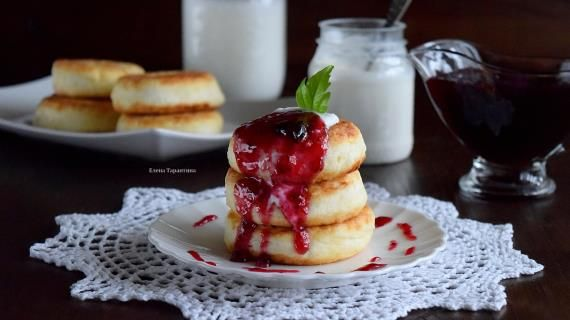

Syrniki (cottage cheese pancakes) are one of the simplest dishes for those just starting out in the kitchen. Yet, there is a catch: few people manage to get them right, which is why so many scour the internet looking for the "perfect" recipe.
In all likelihood, the issue lies not in the cooking technique or ingredient ratios, but in the poor-quality cottage cheese that has—unfortunately—flooded store shelves. After all, you simply cannot make delicious syrniki using a product made with additives of questionable origin. However, if you have found the right kind of cottage cheese—sufficiently high in fat and relatively dry—give ourecipe a try. It is a true classic that turns out perfectly every time!
Prepare the batter for classic
Add the regular sugar, vanilla sugar, and salt to the bowl with the cottage cheese. Mix well.
Beat the egg with a whisk. Add it to the curd mixture and mix with a spatula or fork.
Add the flour. Stir with a spatula until the mixture is smooth and uniform. The dough should not be too stiff, yet it must hold its shape, so add more flour if necessary. Then, place the prepared syrniki mixture in the refrigerator—or simply in a cool spot—for 15 minutes.
Lightly dust the work surface with flour. Turn out the prepared dough for classic syrniki and use your hands to shape it into a thick log, approximately 5 cm in diameter.
Cut the resulting log into rounds no more than 1.5 cm thick. Dredge each syrnik in flour and set aside on a floured surface until ready to fry.
Heat both types of oil in a heavy-bottomed skillet. Fry the syrniki for 2 minutes on each side. Then cover with a lid and cook for another 3 minutes over very low heat.
You can also finish cooking classic syrniki in the oven. To do this, transfer them to a baking sheet after frying and bake for 5 minutes at 200°C.